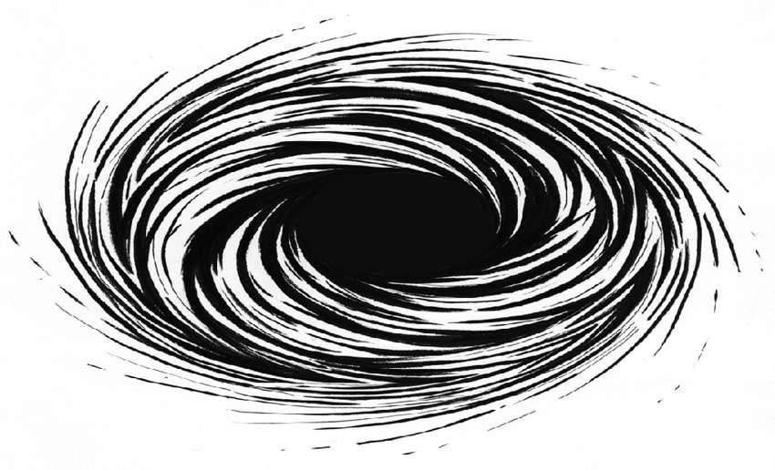
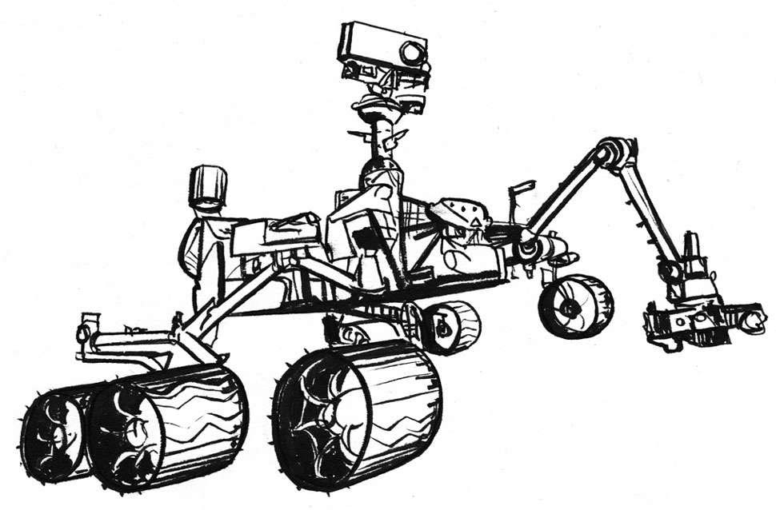

光速约为186 000英里/秒，或6.71亿英里/小时（299 792千米/秒，10.79亿千米/小时）。回忆上一章有关即时通信的部分，我们知道第一封电报的传输速度大约为1 100万英里/小时（1 738万千米/小时），传输只花了0.25秒。而光速要比这个速度快61倍。光从月球到达地球需要1.3秒，从太阳到达地球需要8秒，从距离太阳最近的恒星比邻星发出的光到达地球需要4年，所以我们看到的是4年前从比邻星发出的光。虽然目前我们可以超音速飞行，但是对于光速，不要说超越，达到也仍是遥远的梦想，除非NASA发明出曲速引擎。
如前文所述，行进时时间会减慢，所以如果我们能接近光速飞行，相对于航天器外的时间，我们变老的速度会减慢。据估计，如果某人以光速的99%航行，他航行7年只会变老1岁。
在黑洞中引力达到极限，超过其他一切力量。一旦进入，没有什么可以逃脱黑洞的引力，光也不例外。黑洞不仅存在于理论中，而且确实存在于现实中。

诸如恒星的物体在无法承受其重力的压缩时就会产生黑洞，物体越大，重力越大。当大规模的恒星坍塌时，它们有可能变为一系列黑洞。地球和太阳的质量太小，无法变成黑洞，但广阔的宇宙中散布着上亿颗可以变成黑洞的恒星。在银河系中心有一个“超大质量”的黑洞。
黑洞不会发出任何可探测光。不过天文学家还是能找到它们。他们通过测量类似于黑洞的物质所发出的可见光、X射线和无线电波来寻找黑洞。其中一个定位黑洞的方法是观察太空中的气体。如果气体出现在黑洞周围，则会因为摩擦力变得火热，然后开始释放出X射线和无线电波，让气体变得格外明亮，此时就能通过X射线或者射电望远镜看到气体。我们也可以探测掉入黑洞或被黑洞吸引的物质。
白洞是时空中假设存在的一个区域。与黑洞相反，白洞既不能从外进入，也不会吸入物质，它会把物质和光发射出来。
“光年”一词众所周知，我们也都知道1光年的确是很遥远的距离，但到底有多遥远呢？在我们可以理解的时间范围内，穿越1光年到底要多久呢？
简单定义中的光年，是计量天体间距离的单位，即光在真空中穿行1儒略年 [1] 所经过的距离。经计算，这一距离为10万亿千米（或6兆亿英里）。
这样的距离显然难以想象。如果地球赤道的周长按24 901英里（40 075千米）计算，那么1光年就相当于在一年内绕地球赤道2亿4 950万圈！也可以拿地球和火星之间的距离来做比较。2003年，地球和火星距离最近的时候，它们的距离是5 600万千米（这是5万年来两星球之间最近的距离），而这个距离跟一光年相比不过是一粟之于沧海。2012年美国发射“火星科学实验室”——“好奇号”火星探测车时，火星和地球之间的距离约1亿千米，“好奇号”花了七个半月的时间才抵达火星，但光只需几秒钟就能从火星抵达地球。这样的对比可以帮助你理解光年吗？

火星科学实验室“好奇号”
使用光年是因为我们只有借助很大的距离单位，才能让遥远的星际穿越距离变得可以理解。我们的银河系直径大约为10万~12万光年，包含2 000亿到4 000亿颗恒星。
我们对于广阔宇宙的了解越深入，需要的测量单位就越大。与光年相比，去火星就好像去公园散个步，更别提秒差距（3.26光年）、一千光年（307秒差距）、百万光年（30.7万秒差距）或十亿光年（约为3.07亿秒差距）了。
看完这么多大数字，我们再回到本书开头。当时我们讲述宇宙起源——所谓的“大爆炸”，宇宙从一个致密炽热的奇点开始膨胀。大爆炸发生于135亿至137亿年之前，之后宇宙又不断膨胀。
NASA斯皮策太空望远镜观测遥远的超新星得到的最新数据表明，宇宙在以74.3（千米/秒）/百万秒差距（约300万光年）的速度膨胀，且这个速度还在不断加快。
我们不知道宇宙膨胀速度为什么加快，但我们称引起加速的物质为“暗能量”。我们一般将不能理解的事物形容为“暗的”。科学家认为暗物质充斥着整个宇宙，但人类目前的技术既不足以看到，也无法直接探测到它们。目前学界普遍认为我们宇宙的80%都是由这种神秘物质构成。
有一种假设认为，宇宙不断膨胀会导致“大撕裂”，即宇宙中的物质被撕碎。不过，彼时地球上的生物早已灭绝。学界普遍认为大约50亿年后，太阳会吞没地球，将地球熔为灰烬。